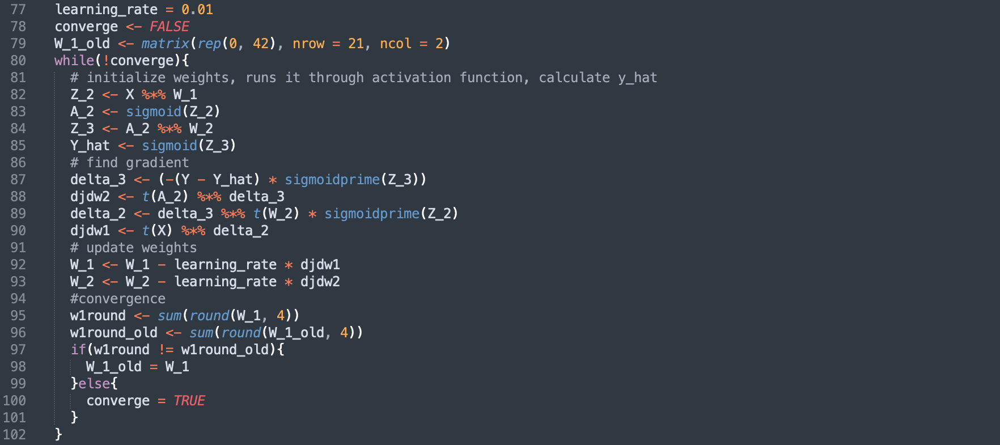

An Introduction to R
Jan 15, 2024
Lecture Outline
- Arithmetic, Syntax, and Basics
- Class Types
- integer | numeric | boolean | character | list | matrix | array | data frame | tibble
- Linear Algebra
- Functions
- Loops
- Simulating and Importing Data
- Visualizing Data
- scatterplot | histogram | boxplot | barplot | pie chart | line graph
- Modeling Data
- lm() | linear | quadratic | cubic | poly() | mean squared error (MSE)
- Playing
- ggplot | exercises | extras
Ice Breaker Activity
Live data visualization activity. Nothing too involved, I promise :)
RStudio
RStudio is an integrated development enviornment (IDE) for R. It is one of the most common R programming environments for data scientists. If you don't already have RStudio downloaded on your computer, please download the free desktop version here: RStudio download. We will be actively programming throughout the lesson.
[Command] + [Enter] - Runs current line
[Command] + [S] - Saves file
Tools -> Global Options -> Appearance -> Editor Theme - Change overall theme
Arithmetic, Syntax, and Basics
######## Assigning Variables ########
x <- 2
x = 2 #Note "=" often works but "<-" is the convention for R
y <- 3
b <- 2
z <- 3.12345
s <- "Welcome!"
adding <- x + y
subtracting <- x - y
multiplying <- x * y
dividing <- x / y
exponents <- x^b
exponents_another_way <- x**b
logarithmis <- log(x)
exponentials <- exp(x)
rounding <- round(z)
rounding1 <- round(z, 1)
rounding2 <- round(z, 2)
######## R Naming Convention: snake_case ########
variable_name <- 523
variable_name
pls.dont.use.dots.even.tho.it.works <- 3049
pls.dont.use.dots.even.tho.it.works
Class Types
######## Numeric ########
a_numeric <- 456
another_numeric <- 12.367
yet_another_numeric <- pi
a_vector <- c(1, 2, 3, 4)
a_sequence <- seq(from = 10, to = 100, by = 10) # an ordered list of numbers
yet_another_sequence <- 1:10 # Integer
######## Logical ########
a_boolean <- 2 == 3
another_boolean <- 1 + 2 == 5 - 2
sum(a_boolean)
sum(another_boolean)
a_na <- NA
######## Characters ########
a_string <- "Hello"
another_string <- 'Datafest!'
######## Matrix ########
a_matrix <- matrix(1, nrow = 2, nco = 5) # a Matrix-Array
a_more_interesting_matrix <- matrix(a_sequence, nrow = 2, nco = 5)
######## List ########
a_list <- list(5, 6, 7, 8)
######## Data Frame ########
a_dataframe <- data.frame(a_matrix)
######## Null ########
a_null <- NULL
concatenated_string <- cat(a_string, another_string)
######## Testing Class Types with class() ########
class(a_numeric)
class(another_numeric)
class(yet_another_numeric)
class(a_vector)
class(a_sequence)
class(yet_another_sequence)
class(a_list)
class(a_matrix)
class(a_boolean)
class(a_string)
class(concatenated_string)
class(a_null)
Linear Algebra
######## Vectors ########
num_vector <- c(1, 2, 3, 4, 5, 6, 7) #note, we re-wrote this variable and overrode it
str_vector <- c("D", "a", "t", "a", "f", "e", "s", "t", "!")
x <- a_vector[1]
y <- a_vector[4]
x + y
str_vector
cat(str_vector)
length(str_vector)
######## Matrices ########
a_matrix <- matrix(data = seq(from = 1, to = 20, by = 1), #note, we are using "=" here
nrow = 10,
ncol = 2)
a_matrix
row <- 5
col <- 2
a_matrix[row, col]
a_matrix[1, ] #1st row, all columns
a_matrix[, 1] #All rows, 1st column
a_matrix[1, 1] <- 75 #rewrite the 1st row 1st column element to = 75
mean(a_matrix) # average
t(a_matrix) # transpose
dim(a_matrix) # dimensions
number_of_rows_displayed <- 3
head(a_matrix, number_of_rows_displayed) #displays top rows
View(a_matrix) #displays matrix on spreadsheet
Functions
######## IF/ELSE Conditional Function ########
if(1 > 10){
print("If 1 > 10 is TRUE, then this will print!")
} else if(80 == 40 * 2) {
print("Cool, 80 is equal to twice of 40!")
} else{
print("Darn, they were all false so now you have me!")
}
a_summation_function <- function(a, b){
return(a + b)
}
a_summation_function(5, 11)
euclidean_distance <- function(point1, point2){ # a^2 + b^2 = c^2
horiz_vert_dist <- (point1 - point2)^2
add_them_up <- sum(horiz_vert_dist)
return(sqrt(add_them_up))
}
xy1 <- c(0, 0)
xy2 <- c(1, 1)
euclidean_distance(xy1, xy2)
Loops
######## For Loops ########
for(i in 1:10){
print(2 * i)
}
fart <- c()
for(i in 1:100){
fart[i] <- "fart"
}
fart
######## While Loops ########
count <- 1
while(count <= 5){
print(paste0("This repeats until count equals 10. We're currently on iteration ", count, "."))
count <- count + 1
}
Simulating and Importing Data
######## Simulating Non-Random Data ########
seq(from = 1, to = 10, by = .5)
1:10
######## Simulating Random Data ########
set.seed(1) #for reproducibility when using a random generator
runif(n = 10, min = 0, max = 100) #random uniform #'s
rnorm(n = 10, mean = 0, sd = 1) #random normal #'s
runif(10, 0, 100) #you don't always have to specify the function - check defaults
######## Data Frames ########
a_simulated_dataframe <- data.frame(variable1 = 1:50,
variable2 = runif(50, 0, 100))
a_simulated_dataframe
View(a_simulated_dataframe)
######## Importing Data ######## https://www.kaggle.com/datasets/pieca111/music-artists-popularity
library(dplyr)
imported_data <- read.csv("music.csv")
View(imported_data)
Visualizing Data
######## Scatter Plots ########
plot(x = 1:10, y = 1:10)
plot(x = 1:10, y = 1:10, type = "l")
plot(x = 1:10, y = 1:10, type = "b") +
lines(x = 1:10, y = 1.2*(1:10))
plot(x = 1:10, y = 1:10, type = "l", main = "Check out this diagonal line!")
plot(x = 1:60, y = (1:60)^2,
type = "b",
main = "Intro to R Lecture Knowledge Rate",
xlab = "Time", ylab = "Knowledge")
plot(a_simulated_dataframe)
######## Histograms ########
hist(x = rnorm(10, mean = 0, sd = 1)) # Note: default is mean = 0, sd = 1
hist(x = rnorm(10),
main = "An Interesting Main Title",
xlab = "A Funny X Axis Title",
ylab = "A Silly Y Axis Title")
######## Central Limit Theorem ########
clt_test <- function(n){
x <- rnorm(n)
hist(x)
}
clt_test(10)
clt_test(100)
clt_test(1000)
clt_test(10000)
######## Bar Plot ########
barplot(height = 1:10)
barplot(height = runif(5, 0, 10),
horiz = TRUE)
barplot(height = c(52, 45, 67, 36, 46),
names = c("Watermelon Sugar", "Adore You", "Golden", "She", "As It Was"),
horiz = TRUE,
las = 1,
cex.names = 0.5,
col = c(1, 2, 3, 4, 5),
main = "What Would You Name The Main Title?")
######## Box Plot ########
bieber_fandom <- rnorm(100, mean = 50, sd = 20)
swift_fandom <- rnorm(100, mean = 80, sd = 15)
boxplot(bieber_fandom, swift_fandom)
boxplot(bieber_fandom, swift_fandom,
names = c("Beliebers", "Swifties"),
main = "Beliber vs. Swifty Fandom",
xlab = "Public Affection Rating",
horizontal = TRUE,
col = c("lightblue", "salmon"))
######## Music Data ########
music <- imported_data
dim(music)
View(music)
table(music$country)
barplot(height = table(music$country))
pie(table(music$country))
# So many countries! Let's remove the smaller ones
country_table <- table(music$country)
View(country_table)
country_table <- country_table[country_table >= 20]
country_table <- country_table[order(country_table)]
barplot(country_table)
barplot(country_table, horiz = TRUE, las = 2, cex.names = 0.5)
# Lets compare the top 50 artists
barplot(height = music$listeners[1:50],
names.arg = music$artist[1:50],
horiz = TRUE,
las = 2,
cex.names = 0.5,
main = "Top 50 Listened-To Artists")
Modeling Data
######## Create Data ########
data <- data.frame(x = 1:10, y = (1:10)^2) # y = x^2 for 1 < x < 10
plot(data)
######## Linear Regression Model lm() ########
lin_model <- lm(y ~ x, data = data)
predict_lin_model <- predict(lin_model)
## Plotting ##
plot(data,
type = "b",
col = "salmon",
lwd = 2,
main = "Fitting a Linear Model to Quadratic Function") +
lines(predict_lin_model, col = "skyblue", lwd = 2)
legend("topleft",
legend = c("Observed", "Predicted"),
fill = c("salmon","skyblue"))
######## Quadratic Model ########
quad_model <- lm(y ~ I(x^2), data = data)
predict_quad_model <- predict(quad_model)
plot(data,
type = "b",
col = "salmon",
lwd = 2,
main = "Fitting a Quadratic Model to Quadratic Function")
lines(predict_quad_model, col = "skyblue", lwd = 2)
legend(x = 1, y = 90,
legend = c("Observed", "Predicted"),
fill = c("salmon","skyblue"))
######## Cubic Model ########
cubic_model <- lm(y ~ I(x^3), data = data)
predict_cubic_model <- predict(cubic_model)
plot(data,
type = "b",
col = "salmon",
lwd = 2,
main = "Fitting a Quadratic Model to Quadratic Function")
lines(predict_cubic_model, col = "skyblue", lwd = 2)
legend(x = 1, y = 90,
legend = c("Observed", "Predicted"),
fill = c("salmon","skyblue"))
######## Challenge Problem: Write a function to compute the MSE ########
mse <- function(y, yhat){
error <- mean( (y - yhat)^2 )
return(error)
}
mse(data$y, predict_lin_model)
mse(data$y, predict_quad_model)
mse(data$y, predict_cubic_model)
######## Music Data ########
which(music$artist == "Taylor Swift")
which(music$artist == "Justin Bieber")
music[138, ]
Playing With Data